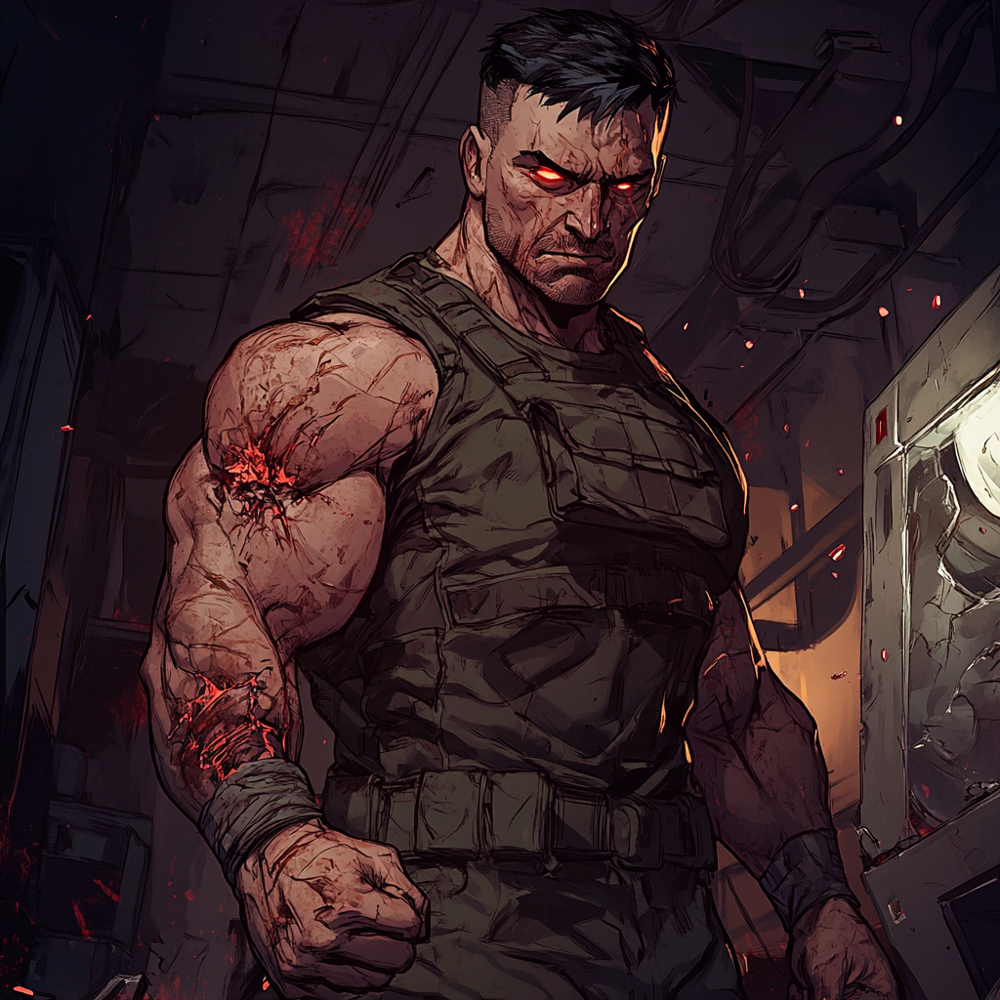

The Uncovering of MU-74: A Titan's Surprise

As TitanPrime and his team from the Boston Avengers Academy investigated a lead on the whereabouts of Dr. Alden Rissler, the scientist responsible for TitanPrime's creation, they found themselves in an abandoned laboratory on the outskirts of the city. The heroes were shocked to discover that Rissler was not only alive but also working with Rhea, another product of the Titan project who had been missing since the destruction of the Olympus Science Station.
The confrontation between TitanPrime and his creator was intense, with Rissler revealing that he had never stopped his experiments to create the perfect superhuman. As TitanPrime attempted to apprehend Rissler, Rhea used her teleportation abilities to help the scientist escape, leaving the heroes with more questions than answers.
However, their investigation of the abandoned laboratory led to a startling discovery: a hidden chamber containing a cryogenic pod. Inside was a figure that TitanPrime recognized from Rissler's files – Military Unit 74, or MU-74, another attempt at creating a superhuman soldier.
As the team cautiously approached the pod, MU-74's eyes snapped open, and the chamber began to crack. With a roar of rage, the enhanced soldier burst free, his eyes fixed on TitanPrime. The heroes quickly realized that MU-74 was not a rational being but a creature driven by instinct and aggression.
The battle that ensued was fierce, with MU-74 displaying incredible strength, speed, and resilience. His combat training, combined with his enhanced abilities, made him a formidable opponent. TitanPrime and his teammates found themselves pushed to their limits as they tried to contain the rampaging supersoldier.
Despite their best efforts, MU-74 seemed unstoppable, shrugging off attacks that would have felled a lesser being. His regenerative abilities allowed him to recover from even the most severe wounds, and his berserker rage only seemed to grow with each passing moment.
It was only through a combination of teamwork, strategic planning, and TitanPrime's own incredible powers that the heroes were finally able to subdue MU-74. As the dust settled, they realized that this was not the end of their troubles but the beginning of a new mystery.
With Rissler and Rhea still at large and the existence of MU-74 revealed, TitanPrime knew that he would have to confront not only his own past but also the consequences of the Titan project. The failed supersoldier now in their custody was a reminder of the dangerous potential of unchecked scientific ambition and a warning of the threats that might still lurk in the shadows of TitanPrime's origin.